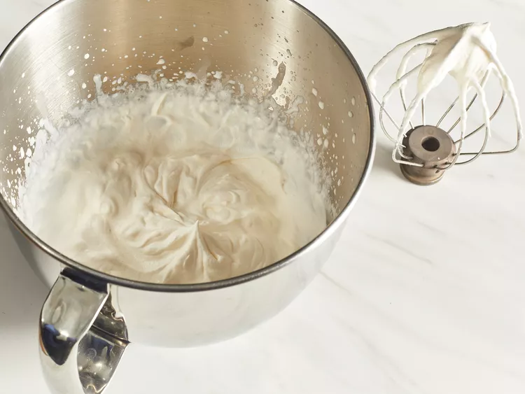

30 mins
5 mins
5 hrs
5 hrs 35 mins
12
1 (7x11-inch) tiramisu
Ingredients
- 6 large egg yolks
- ¾ cup white sugar
- ⅔ cup milk
- 1 ¼ cups heavy cream
- ½ teaspoon vanilla extract
- 1 pound mascarpone cheese, at room temperature
- ¼ cup strong brewed coffee, at room temperature
- 2 tablespoons rum
- 2 (3 ounce) packages ladyfinger cookies
- 1 tablespoon unsweetened cocoa powder
Directions
Step 1
Whisk egg yolks and sugar together in a medium saucepan until well blended.
Step 2
Whisk egg yolks and sugar together in a medium saucepan until well blended.

Step 3
Boil gently for 1 minute, then remove from the heat and allow to cool slightly.
Step 4
Cover tightly and chill in the refrigerator for 1 hour.
Step 5
Beat cream and vanilla in a medium bowl with an electric mixer until stiff peaks form.
Step 6
Remove egg yolk mixture from the refrigerator; add mascarpone cheese and whisk until smooth.
Step 7
Combine coffee and rum in a small bowl. Split ladyfingers in half lengthwise and drizzle with the coffee mixture. Arrange 1/2 of the soaked ladyfingers in the bottom of a 7x11-inch dish.

Step 8
Spread 1/2 of the mascarpone mixture over the ladyfingers, then spread 1/2 of the whipped cream over top. Repeat layers once more.

Step 9
Sprinkle cocoa powder over top.
Step 10
Cover and refrigerate until set, 4 to 6 hours.
Step 11
Enjoy!

Nutrition Facts(per serving)
Calories
Fat
Carbs
Protein
© 2023 Food&Cook. All Rights Reserved.
Design by Pabudu Gihan